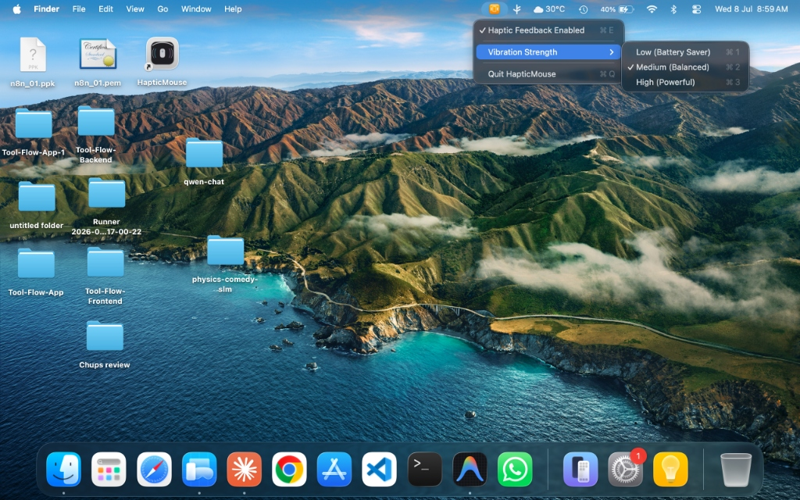

A haptic scroll wheel
for any mouse.
Plug in any USB or Bluetooth mouse and feel a click on every scroll notch, borrowed from the Taptic Engine in your MacBook's trackpad.
Apple Silicon MacBook · macOS 11 or later · MIT licence

What it does
- Scroll you can feelEach notch of the wheel becomes a physical tick.
- Clicks tooMouse clicks are passed to the trackpad's haptic motor.
- Typing feedback, if you want itA heavier click for space and return, light ticks for letters. Off by one toggle.
- Strength sliderAdjust the intensity and feel it change as you drag.
- Easy on the batteryFeedback is rate-limited, so fast scrolling does not keep the motor running.
- PrivateNothing is logged and nothing is written to disk.
- Out of the wayA menu-bar icon. No Dock icon, no windows.
- Open sourceOne Swift file. Read exactly what it does.
Install
- Download HapticMouse.zip, unzip it and move the app to Applications.
- The first time, macOS blocks it because the app is not notarised by Apple. Open System Settings → Privacy & Security and click Open Anyway.
- Allow Accessibility for HapticMouse in System Settings → Privacy & Security. It needs that to see scroll and click events.
To start it with your Mac, add it under System Settings → General → Login Items.